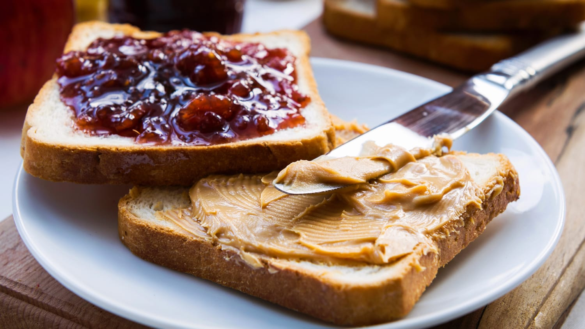

The Perfect PB&J

Description
This peanut butter and jelly sandwich is my favorite sandwich. It has the perfect balance of ingredients and looks great when made right.
Ingredients
- 2 Slices of white bread
- 1 Jar of grape jelly
- 1 Jar of creamy peanut butter
- 1 Butter knife
- 1 Sharp knife
- 1 Cutting board
Directions
- Lay both slices of bread next to each other on a cutting board.
- With the butter knife, spread a 1/8 inch layer of peanut butter on the left side
- On the right side, spread a 1/8 inch layer of jelly.
- Carefully place the two halves together so that the jelly is on top.
- With the sharp knife, carefully cut the sandwich in half.
You can find more unusual PB&J recipies here.